双臂协同运动规划（Coordination Motion Planning）
Constrained Relations between Two Coordinated Industrial Robots for Motion Control（1987 IJRR）
The motion of the second robot is to follow that of the first robot, as specified by the relations of the joint velocities derived from the constraint conditions. Thus if any modification of the motion is needed in real time, only the motion of the first robot is modified. The modification for the second robot is done implicitly through the constraint conditions. Specifically, when the joint displacements, velocities, and accelerations of the first robot are known for the planned or modified motion, the corresponding variables for the second robot and the forces/torques can be determined through the constrained relations.
Although computationally efficient, this strategy assumes a fixed master–slave relationship, which, when dealing with moving objects, may adversely affect performance if the arms need to switch responsibility to perform the task on-line.
典型的分布式控制方案，主机械臂的轨迹通过示教等方式得到（从工业中来，一般已知主机械臂运动），采用实际协同抓取过程中的力反馈或者误差预测得到的虚拟力反馈来调整从机械臂运动，
主机械臂规划过程中未考虑从机械臂的运动，无法充分利用系统的灵巧性
实际力反馈还存在抓取物体动力学问题
从机械臂需要以小阻抗来跟踪主机械臂，这种小阻抗力控制方式当时仍有待研究【Compliance and force control for computer controlled manipulators】
主从机械臂的分配
Symmetric kinematic formulation and non-master/slave coordinated control of two-arm robots （1992 AR）
- 协同的理解：末端之间存在相对运动约束
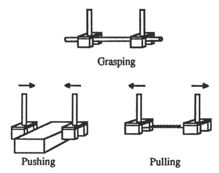
不采用主从控制，在已知物体速度基础上双臂均采用力/位混合控制，主要解决如何在已知物体运动的条件下，通过双臂实现该运动并保持相对约束
物体运动的规划没有考虑，理论上物体的运动需要考虑到机械臂的碰撞，灵巧性等多方面指标，这种任务分层会损失一定性能甚至不一定可行
小位移运动，目前看下来没有实验数据说明其在运动过程中的相对约束保持性能
Adaptive Synchronized Control for Coordination of Multirobot Assembly Tasks（2002 TRO）
The key to the success of the new method is to ensure that each manipulator tracks its desired trajectory while synchronizing its motion with other manipulators’ motions, so that differential (or synchronization) position errors amongst manipulators converge to zero.
The controller, designed by incorporating the cross-coupling technology into an adaptive-control architecture, successfully guarantees asymptotic convergence to zero of both position tracking and synchronization errors simultaneously.
在已知物体期望位置的基础上实现了一款分布式控制器，以位姿误差等输入，能够在收敛到期望位置的同时尽量保持相对运动约束
物体运动的规划没有考虑，理论上物体的运动需要考虑到机械臂的碰撞，灵巧性等多方面指标，这种任务分层会损失一定性能甚至不一定可行
机械臂控制中不考虑碰撞，在考虑碰撞条件下不一定能够继续很好的保持约束
A more compact expression of relative Jacobian based on individual manipulator Jacobians （2015 RAS）
This work presents a re-derivation of relative Jacobian matrix for parallel (dual-arm) manipulators, expressed in terms of the individual manipulator Jacobians and multiplied by their corresponding transformation matrices.
Pioneering work on relative Jacobian [1,2] derived an entirely new formulation without using the existing Jacobians of the individual manipulators.
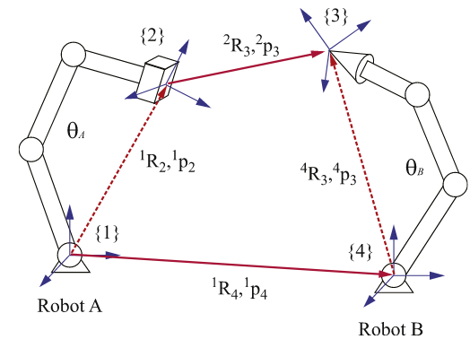
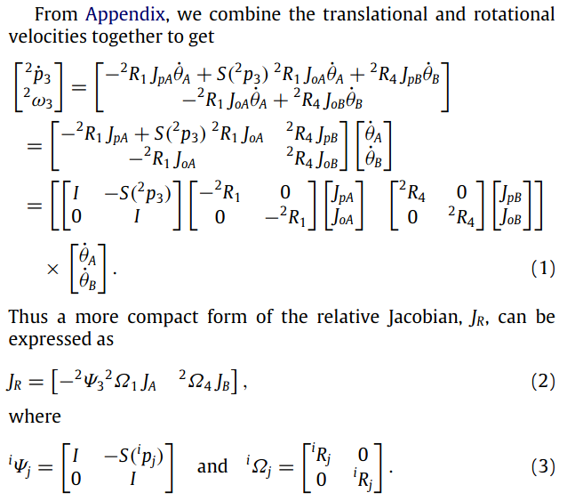
推导了移动底座和固定底座两种条件下，机械臂末端相对距离的雅可比矩阵与每个机械臂雅可比矩阵之间的关系，从推导来看这个线速度部分的推导更为合理，考虑了机械臂1末端到世界坐标系的旋转变换矩阵的导数，角速度对应的就是旋转矩阵，旋转矩阵的导数 = 角速度 x 旋转矩阵
- 位置和速度分开，不如对偶四元数对机器人进行位姿一体化建模
A unified framework for coordinated multi-arm motion planning（2018 IJRR）
The space of free motion is modeled through a sparse non-linear kernel classification method in a data-driven learning approach.（自碰撞采用SVM实现）
We define a synchronous behavior as that in which the robot arms must coordinate with each other and with a moving object such that they reach for it in synchrony（抓取运动物体需要双臂同时跟踪物体轨迹）. In contrast, an asynchronous behavior allows for each robot to perform independent point-to-point reaching motions. To transition smoothly from asynchronous to synchronous behaviors and vice versa, we introduce the notion of synchronization allocation.
Once the feasible intercept point is found, the motion of the ith robot’s end-effector ∀i ∈ {1, . . . , NR}, is generated by following a LPV DS, composed of both synchronous and asynchronous behaviors, and coupled to the motion of the object (ξ O) through a virtual object (ξ V ) (see Figure 4) as follows
通过DS计算两个机械臂末端的期望速度，再通过逆解映射到各个关节
设计期望速度的时候只考虑了协同到分立之间的切换，并没有考虑到机械臂灵巧性等多方面指标，本质上还是操作物体轨迹已知，分配到各机械臂上进行跟踪
逆解运动过程中的协同约束保持没有考虑，一旦有一个机械臂的速度无法实现，就会造成运动不同步，协同约束破坏
Constrained Path Planning for Reconfiguration of Cable-Driven Parallel Robots（2023 TIE）
Due to the loop-closure constraints imposed by the coordinated changes of the cable anchor positions and cable lengths, the implicitly defined manifold is employed, which is locally approximated by a set of tangent spaces that can facilitate the guarantee of constraints during the reconfiguration of the RCDPR.
Actually, the manifold can be represented in two ways: the explicit parametrization and the implicit parametrization. If the manifold is represented explicitly, configurations lying on the constrained manifold can be found easily. However, it is very difficult to select another set of independent variables to parameterize this manifold (8) globally in an analytic explicit form. Since the manifold is already defined implicitly in (8) and is a space that has locally Euclidean properties, we can locally approximate it using a set of tangent spaces that have the same dimensions as M.
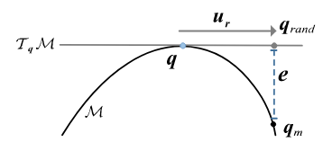
- In practice, ||F (qrand)||≤ ε is usually set to represent that the random configuration qrand ∈ M, where ε is a small threshold value. To project qrand onto the manifold M, the Newton-Raphson method in Algorithm 1 is employed to iteratively reduce ||e|| until it is smaller than ε, which results in a new point qm ∈ M (shown in Fig. 4). In Algorithm 1, the initial value of the iteration is qrand and J†(qm) =J (qm)T [J (qm)J (qm)T ]−1 denotes the pseudoinverse of J(qm).
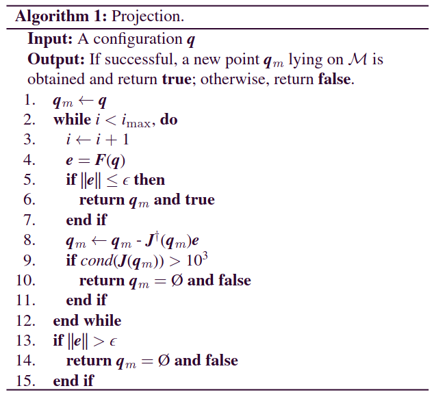
Since the configuration qrand in the tangent space is near the root configuration q and the value of rj is relatively small, the error e will not be very large, which means that qrand is close to the manifold M. Thus, when qrand is projected onto M, only few iterations are required, which leads to a faster convergence in Algorithm 1. Thus, the process of searching feasible configurations lying on the manifold M can be accelerated, which is the advantage of using the tangent space.
首先将协同约束建立的空间表达为流形M，然后在当前位置对应的切向空间上进行运动规划，得到切向空间上的目标点后，再通过牛顿迭代法投影到流形M上，个人理解上，对于之前的方法，是先在完整构型空间内规划，再通过零空间投影到切平面上，实际上切平面到实际流形M之间仍然存在一定距离，本文就是通过牛顿迭代法进一步缩小了该距离
- 可以借鉴的点，一个是直接在切向空间上规划，从而提供更精确的结果
Fast and Accurate Relative Motion Tracking for Dual Industrial Robots（2024 RAL）
研究问题
给定物体操作轨迹条件下，如何在只采用厂商提供的运动模式下以最大速度跟随，同时平衡双臂协同误差和跟随误差
单机器人速度限制与双机器人协调难题：工业场景中（如喷涂、焊接），单机器人沿 3D 空间曲线运动时受自身速度上限限制，难以提升生产吞吐量；双机器人协同虽可突破速度瓶颈，但需解决相对运动路径跟踪的精度（位置、姿态误差）与速度均匀性问题，传统人工调试耗时且难以满足性能要求。
运动基元与控制器特性的适配矛盾：工业机器人仅支持固定运动基元（moveL、moveC、moveJ），且厂商私有混合策略与底层控制算法不透明，导致理论轨迹与实际运动存在偏差；同时，运动基元间的混合区域设置会影响速度均匀性（大混合区域易导致路径误差，小混合区域易引发速度波动），难以平衡精度与效率。
多约束下的轨迹优化复杂度高：双机器人协同需同时满足相对位置 / 姿态约束（如工具与工件的相对位置、表面法向量对齐）、关节速度 / 加速度限制，且需最大化平均路径速度并保证速度标准差在允许范围（如 5%）内，传统优化方法难以同时处理多目标与多约束，易陷入局部最优。
缺乏自动化的轨迹生成与调试方案：当前工业实践依赖专家手动调整路径点与运动参数，面对复杂空间曲线（如涡轮叶片前缘）时，调试周期长且难以复现；同时，物理机器人与仿真环境的性能差异（如负载、动态特性）导致仿真优化结果难以直接迁移至实际系统，需反复迭代验证。
研究方法
System Configuration Optimization: For a given system configuration ( q(1) 0 , q(2) 0 , T (2) b ) , we use Jacobian-based inverse kinematics for redundancy resolution to find the entire joint space trajectory under constraints (1a)–(1c). A speed estimation model is used to find the maximum constant μ, we then use differential evolution to find the best system configuration to maximize μ.
Waypoint Optimization: The solution in step 1 is not directly realizable using industrial robot motion programs. Instead, we will approximate the target curve in terms of motion primitives to within a specified tolerance while using the smallest number of waypoints. The reason is that waypoints tend to compromise performance due to the need to blend motion segments. We apply greedy search in this step by choosing the best motion primitive type for each motion segment. We then use the simulator from the robot vendor to check the speed uniformity constraint (3a). The robot velocity and acceleration constraints are typically already enforced in the simulator. The path speed is then lowered from step 1 until the speed uniformity constraint is satisfied.
Waypoint Iteration: The final step is to adjust the waypoints directly to improve the path constraints (3a)–(3c). This step is performed first in simulation and continued with the physical robots if available.
三步式双机器人运动优化框架：通过系统配置优化、运动基元拟合、路径点迭代调整，实现快速精准的相对运动跟踪，兼顾理论优化与工业机器人实操特性。
系统配置优化：以最大化恒定相对路径速度为目标，优化双机器人初始关节角度、基座相对位姿（q0(1),q0(2),Tb(2)）；基于雅可比矩阵的冗余分辨率求解关节轨迹，结合关节速度 / 加速度约束（q˙min≼q˙≼q˙max、q¨min≼q¨≼q¨max）计算最大可行速度；采用差分进化算法进行全局优化，迭代优化 15 个配置参数（含基座平面变换 3 参数、初始关节角度 12 参数），提升速度上限（如曲线 1 速度从 680mm/s 提升至 1332mm/s）。
运动基元贪心拟合：针对工业机器人仅支持固定运动基元的限制，采用贪心搜索算法，从初始路径点出发，通过二分查找确定最长可行运动段（moveL/moveC/moveJ），确保相对轨迹误差在阈值内（位置误差≤0.5mm、姿态误差≤3°）；双机器人运动基元同步规划，保证两者在相同时间到达对应路径点，适配厂商多机器人同步控制功能（如 ABB Multimove、FANUC MultiArm），减少混合区域对速度的影响。
路径点迭代调整：先在厂商仿真环境（如 ABB RobotStudio、FANUC RoboGuide）中，基于跟踪误差对路径点进行比例调整（沿误差方向修正位置与姿态）；再针对物理机器人实测误差峰值，采用多峰梯度下降法，仅调整误差超标的路径点及其相邻点（基于三次样条插值估算误差梯度），迭代 5 次左右使误差达标；同时逐步降低路径速度，直至满足速度均匀性约束（标准差≤5%）。
关键技术支撑：通过雅可比矩阵建模相对运动约束，结合实验识别机器人加速度限制（弥补厂商未披露的动态参数），开发跨厂商机器人驱动程序（解析运动基元指令为厂商脚本），并集成 Python Qt 可视化界面，支持 URDF 机器人模型与 CSV 格式曲线输入，实现自动化流程。
研究缺陷
物理与仿真环境的性能差距未完全消除：尽管通过路径点迭代调整缩小误差，但物理机器人因负载变化、关节间隙等因素，实际速度仍低于仿真结果（如曲线 2 双机器人优化速度仿真 1705.26mm/s vs 物理 1404.87mm/s），且厂商控制器计算能力限制（如 IRC5 控制器双机器人协同时易触发路径转角错误）导致理论性能难以完全发挥。
运动基元类型选择的自动化程度不足：贪心拟合算法虽能选择 moveL/moveC/moveJ，但需人工预设误差阈值与搜索步长，面对高曲率曲线（如多频率正弦曲线）时，可能出现运动基元类型频繁切换，增加混合区域数量，间接影响速度均匀性。
多机器人扩展适配性有限：当前框架主要针对双臂系统，未扩展至多臂（3 台及以上）场景；多臂协同需重新设计基座相对位姿优化维度与同步机制，现有差分进化算法的参数维度（15 个）与迭代效率难以直接复用。
动态环境适应性差：框架假设工件与机器人基座固定，未考虑动态干扰（如工件振动、外部力扰动）；面对动态场景时，路径点迭代调整的滞后性会导致跟踪误差超标，需引入实时误差补偿机制，而现有方法依赖离线迭代，无法满足动态响应需求。
Extending the Cooperative Dual-Task Space in Conformal Geometric Algebra（2024 ICRA）
研究问题
传统双臂协作任务建模的几何表达局限性：基于对偶四元数代数（DQA）的协作双任务空间（CDTS）虽能统一位置与姿态表示，但几何原语（如圆、线）表达能力有限，无法直接建模复杂协作任务（如双臂沿圆轨迹操作、轴线对齐），需依赖多代数组合，增加建模复杂度。
双臂状态协同表示的低效性：现有方法多通过堆叠单臂状态（如末端执行器位置、姿态）描述双臂系统，未考虑双臂间的几何关联，导致优化问题解耦，无法实现真正协同（如单目标点的双臂自动分配），且易引入冗余约束或 singularities（奇异点）。
几何原语与最优控制的集成难题：双臂协作任务常需结合几何约束（如末端执行器距离、姿态对齐）与最优控制（如模型预测控制），但传统CDTS缺乏与几何代数最优控制框架的无缝衔接，需大量数学转换，降低计算效率与控制精度。
复杂任务建模的灵活性不足：面对双臂平衡平板、协同抓取等任务，传统CDTS难以灵活组合多几何约束（如平面垂直、相对距离固定），且无法直接利用几何运算（如交集、包含关系）简化约束表达，导致任务定义繁琐、适应性差。
研究方法
共形几何代数协作双任务空间（CGA-CDTS）构建：基于共形几何代数（CGA）扩展传统DQA-CDTS，保留紧凑性与无奇异特性，同时增强几何表达能力，核心是定义相对电机与绝对电机，并引入协同点对（cooperative pointpair）原语。
核心几何表示与 Jacobian 推导
相对电机与绝对电机：通过CGA电机（motor）表示双臂末端执行器姿态，相对电机\(M_r = \tilde{M}_2 M_1\)（\(\tilde{M}\)为电机反转）描述双臂相对姿态，绝对电机\(M_a = M_2 exp(\frac{1}{2}log(M_r))\)描述双臂整体绝对姿态；推导对应的解析 Jacobian（\(\mathcal{J}_rA\)、\(\mathcal{J}_aA\)），实现电机与关节空间的梯度映射，维度为\(8×2N\)（\(N\)为单臂自由度）。
协同点对：创新定义双臂末端执行器点的外积\(P_{cdts} = (M_1 e_0 \tilde{M}_1) \Lambda (M_2 e_0 \tilde{M}_2)\)，同时表示双臂位置关联；推导其 Jacobian（\(\mathcal{J}_{P_{cdts}}\)），通过外积特性自动实现双臂协同（如单目标点的自动分配），避免解耦建模，且通过距离约束规避外积为零的奇异点。
基于CGA-CDTS的任务建模：利用CGA丰富几何原语（点、线、圆、平面）与运算（外积、交换积、内积），构建多样化协作任务的优化目标与约束，具体形式如下：
协同到达单目标点：最小化外积残差\(\min_q \|P_{target} \Lambda P_{cdts}\|_2^2\)，通过外积特性让距离目标更近的机械臂自动执行任务，无需人工分配。
协同到达圆轨迹：以交换积（commutator product）构建约束\(C × P_{cdts} = 0\)（\(C\)为目标圆），结合相对电机保持约束\(\min_q \|log(\tilde{M}_r(q_0)M_r(q))\|_2^2\)，确保双臂沿圆运动时维持初始相对姿态。
姿态轴线对齐：通过电机变换线原语\(L_1、L_2\)，最小化交换积残差\(\min_q \|M_1 L_1 \tilde{M}_1 × M_2 L_2 \tilde{M}_2\|_2^2\)，实现双臂末端执行器特定轴线（如x轴）的共线约束。
与最优控制框架的集成：将CGA-CDTS融入几何代数最优控制框架，通过电机对数映射将姿态误差转化为可优化残差，结合模型预测控制（MPC）实现实时控制：
状态与输入定义：状态\(x = [q_1^T, q_2^T, \dot{q}_1^T, \dot{q}_2T]T\)，输入\(u = [\ddot{q}_1^T, \ddot{q}_2T]T\)。
目标函数与约束：目标函数含终端成本（如平板水平约束）与阶段成本（如初始构型偏差、输入能耗），约束含系统动力学\(x_{k+1}=f(x_k,u_k)\)与几何约束（如绝对电机z轴垂直于xy平面）。
实时求解：采用迭代线性二次调节器（iLQR）求解MPC问题，控制频率100Hz，逆动力学控制频率1000Hz，确保平板平衡等任务的响应性与稳定性。
研究缺陷
协同点对的奇异点处理依赖先验约束：协同点对 Jacobian 在双臂末端执行器位置重合时存在奇异点（外积为零），虽可通过距离约束规避，但需人工预设距离阈值，缺乏自适应调整机制，面对动态任务（如双臂抓取变形物体）时鲁棒性不足。
高维几何运算的计算效率问题：CGA 多向量运算（如电机对数/指数映射、多原语 Jacobian 推导）维度较高（如电机对应8维多向量），在实时控制（如100Hz MPC）中可能增加计算负担，尤其当任务涉及多几何原语组合时，需进一步优化运算效率。
复杂几何原语的扩展受限：当前框架主要验证点、线、圆、平面等基础原语，对于更复杂的几何原语（如椭圆、球面），其在CGA-CDTS中的表示与 Jacobian 推导尚未完善，无法直接应用于更复杂协作任务（如双臂沿椭圆轨迹搬运）。
动态环境适应性不足：实验主要针对静态任务（如固定目标点、圆轨迹），未考虑动态目标（如移动的协作对象）或环境干扰（如外力扰动），且最优控制框架的预测时域与步长选择依赖经验，缺乏动态调整策略，面对突发变化时控制精度可能下降。
Predictive Multi-Agent-Based Planning and Landing Controller for Reactive Dual-Arm Manipulation（2024 TRO）
- We aim to bridge the gap between reactive solutions, global planning, and constrained cooperative (two-arm) manipulation in partially known surroundings.
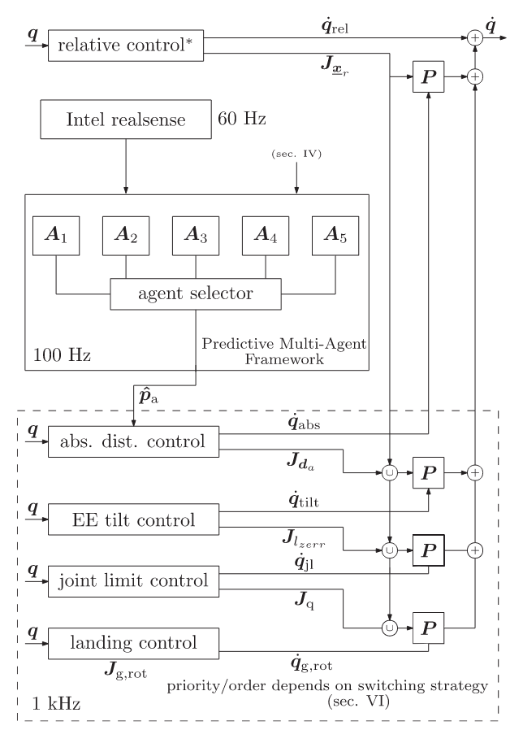
先采用势场法综合目标点吸引，末端环境碰撞，机械臂自碰撞，操作度，关节角限制等约束得到操作物体的参考速度，再将这个参考速度提供给分层零空间投影进行求解：
没有考虑机械臂碰撞，给出的参考速度不一定对于机械臂可行
定义了严格的任务优先级，切换过程是离散的，可能出现速度不连续的情况
这种零空间投影不一定能够保证多层级的硬约束保持
A real-time collision avoidance method for redundant dual-arm robots in an open operational environment （2025 RCIM）
- It should be noted that when dual arms are moving an object, the end-effectors of the arms need to remain relatively stationary, at which point the values of ̇pwr and ωwr should be zero. Based on the Eq. (18), the proposed collision avoidance Eq. (16) for the redundant manipulator is further extended to the redundant dualarm robot performing coordinated tasks, and the equation is given as follows
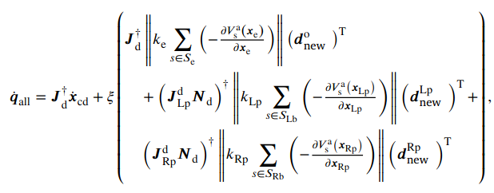
本质上还是分层零空间投影的控制架构，但对于碰撞的排斥速度进行了特殊设计
末端期望速度和协同约束放在了同一优先级，能否同时满足？避障放在了次要优先级？
没有量化研究协同误差
Adaptive Noise Rejection Strategy for Cooperative Motion Control of Dual-Arm Robots（2025 RAL）
- In this letter, cooperative motion control of dual-arm robots in the presence of harmonic noise is investigated. On the basis of the relative Jacobian method, an adaptive noise rejection strategy is proposed for cooperative motion control of dual-arm robots perturbed by harmonic noise.
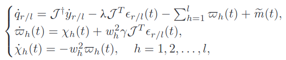
- 基于2015年提出的相对雅可比矩阵，考虑多种谐波噪声运动学影响下的协同约束保持
A Hybrid Neurodynamic Scheme for Bimanual Synchronized Tracking Control of Robotic Manipulators With Uncertain Kinematics（2025 TII）
研究问题
针对双臂机械臂在复杂场景下的控制难题，聚焦运动学完全未知的双臂系统同步跟踪控制，核心问题可归纳为三类：
运动学建模与适配难题：机械臂结构复杂、可重构性强（如带柔性末端工具时易发生不可预测形变），传统基于 Denavit–Hartenberg 公约的建模方法失效；现有无模型控制方法中，离线数据驱动法需大量数据且适应性差，线性化回归矩阵法仅适用于 2-3 自由度平面机器人，无法满足 6-DOF/7-DOF 高自由度机械臂需求。
双臂同步控制缺失：多数双臂跟踪控制方法为分布式设计，仅单独优化单机械臂跟踪精度，忽略位姿同步误差；部分考虑同步的方法需分解运动学 / 动力学为回归矩阵与参数向量，存在计算复杂问题，且未同时兼顾位置与姿态的统一控制。
小脑启发控制适配性不足：人类小脑的运动协调与学习机制虽为机械臂控制提供灵感，但现有小脑模型仅适用于关节空间动态控制（需驱动空间与任务空间维度一致），无法直接迁移至运动学控制（维度不匹配）；且双臂控制中需同时补偿跟踪误差与同步误差，难以选择小脑模型的输入信号与教学信号。
- This article studies the synchronized tracking control problem of a dual-arm system with completely unknown kinematic model for the first time.
研究方法
- 先用神经动力学方法估计运动学雅可比，再结合相对位姿误差和绝对跟踪误差计算末端期望速度，结合雅可比伪逆构建QP问题计算关节空间速度，除了QP求解外，还用一个神经网络作为补充控制输入
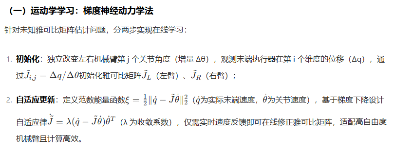
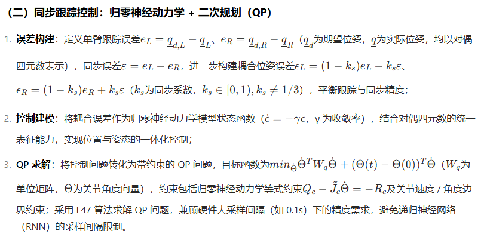
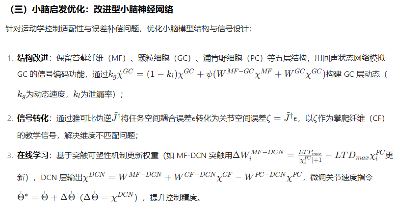
研究缺陷
硬件依赖与鲁棒性局限：末端执行器速度需通过传感器测量或位姿数据估计，虽采用低通滤波处理噪声，但未验证极端噪声（如传感器故障、环境干扰）下的控制稳定性；且 QP 求解依赖 E47 算法的迭代收敛，当机械臂关节约束剧烈变化（如突发障碍导致关节极限触发）时，未评估算法的实时性与收敛性是否受影响。
小脑模型泛化性不足：小脑神经网络的参数（如颗粒细胞数量 400、学习率 η=0.001）为实验经验设定，未分析参数对不同类型机械臂（如柔性臂、协作机器人）的适配性；且仅通过关节空间误差单一信号训练，未考虑多信号融合（如力反馈、视觉反馈）对学习效率的提升潜力。
复杂任务场景覆盖不全：验证任务集中于轨迹跟踪（圆形、蝴蝶轨迹）与简单协同运输（叠加长方体），未涉及动态负载变化（如抓取物体重量实时改变）、多机械臂协同（超过 2 台机械臂）或非结构化环境（如随机障碍物）场景，难以全面验证方法的复杂场景适应性。
理论分析深度不足：虽通过仿真与实验验证了方法有效性，但未对归零神经动力学模型的收敛性进行严格数学证明（仅引用现有研究结论）；且未量化分析同步系数ks对跟踪精度与同步精度的 trade-off 关系，缺乏最优ks的选择策略。
Global Coordinated Stabilization of Multiple Simple Mechanical Control Systems on a Class of Lie Groups（2025 TAC）
研究问题
在多智能体协同控制领域，由简单机械控制系统（SMCS，如机器人、航天器、车辆等）组成的多智能体系统，其构型空间常被建模为李群（如特殊欧氏群 SE (n)、特殊正交群 SO (n)）。这类系统的全局协调镇定面临两大核心挑战：
（一）拓扑障碍与控制器局限性
连续反馈的全局镇定困境：李群（尤其是紧致李群）的拓扑特性（如 SO (3) 的非单连通性）导致连续状态反馈无法实现全局渐近镇定，因紧致流形上的连续动态系统不存在全局渐近稳定平衡点，传统光滑控制器仅能实现局部或近全局稳定。
现有混合控制器的约束瓶颈：现有协同混合控制策略（如基于四元数的姿态同步）需满足 “旋转不变性” 或 “伴随不变性” 约束，即混合反馈在状态旋转作用下保持不变，这限制了控制器对不同李群的适配性，多数实际混合反馈（如跟踪控制中的梯度反馈）无法满足该约束，难以直接迁移到协调镇定任务。
（二）协同潜在函数（SPF）的存在性空白
非马尔可夫协同任务适配难：全局协调镇定需使相邻智能体稳定在固定相对位置，这类任务依赖智能体间的相对状态，传统依赖当前状态的潜在函数无法处理；且现有 SPF 构造方法（如角度扭曲变换）仅针对特定李群（如 SO (3)），未推广到一般紧致李群，无法保证对 SE (n) 等非紧致实用李群的适用性。
网络拓扑与稳定性耦合复杂：多智能体网络的拓扑结构（如树状、环状）会影响信息传递与控制器设计，现有方法多针对欧氏空间设计，在李群上难以处理拓扑与系统动力学的耦合，尤其在树状网络外的拓扑中易出现不稳定问题。
研究方法
为解决上述问题，研究提出分布式协同混合控制器，结合李群几何特性、协同潜在函数（SPF）与混合动态系统理论，实现紧致李群及非紧致 SE (n) 上多 SMCS 的全局协调镇定，具体如下：
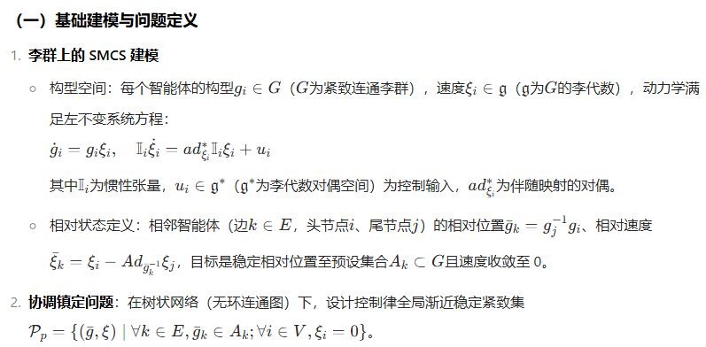
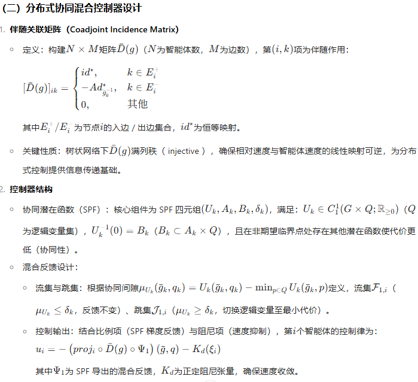
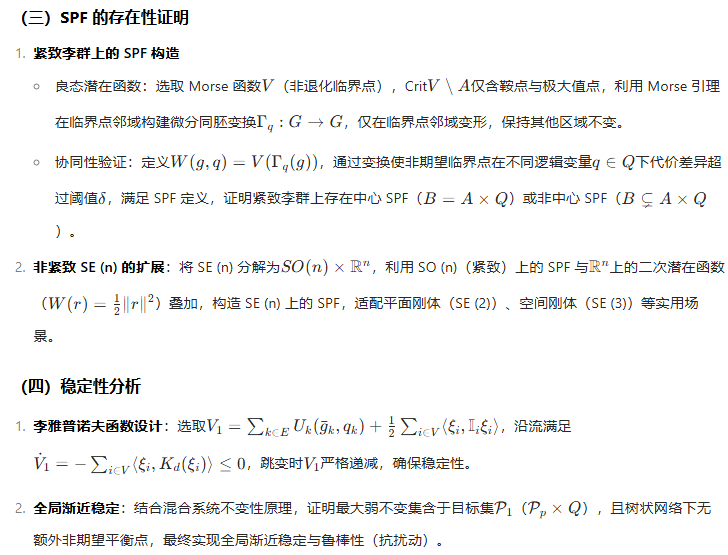
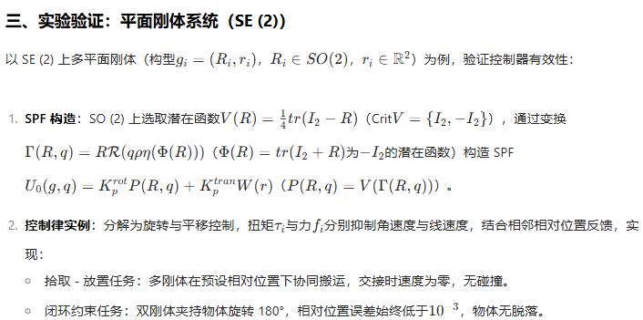
研究局限
方法创新性：提出伴随关联矩阵实现分布式信息融合，移除混合反馈的不变性约束，拓展控制器适用范围；首次证明一般紧致李群与 SE (n) 上 SPF 的存在性，为李群上多智能体控制提供通用框架。
性能优势：在树状网络下实现全局渐近稳定，鲁棒性强，且通过混合反馈解决李群拓扑障碍，相比传统连续控制器适用场景更广（如 SO (3) 姿态同步、SE (2) 平面协同）。
网络拓扑限制：仅针对树状网络，有环网络（如环状）下伴随关联矩阵非满秩，无法保证控制器有效性，需进一步研究有环网络的拓扑适配方法。
动态系统扩展不足：基于全驱动 SMCS，未考虑欠驱动系统（如欠驱动船舶），且未涉及时变网络（智能体加入 / 退出）的动态适配。
计算复杂度：SPF 构造依赖临界点邻域的微分同胚设计，高维李群（如 SE (3)）下变换复杂度高，需优化计算效率以适配实时控制。
Related Works
Hierarchical quadratic programming: Fast online humanoid-robot motion generation（2014 IJRR）
A first solution to account for these tasks is to embed the corresponding inequality constraint into a potential function (Khatib, 1986) such as a log barrier function, whose gradient is projected into the redundant DOF let free by the first objective
The potential function in fact transforms the inequality into an equality constraint, which is always applied even far from the obstacle.
Rather than selecting a priori values of Q, it was proposed in Siciliano and Slotine (1991) to impose a strict hierarchy between the constraints. The first constraint (with highest priority) ( A1, b1) will be solved at best in the leastsquare sense using (3). Then the second constraint ( A2, b2) is solved in the null space of the first constraint without modifying the obtained minimum of the first constraint.
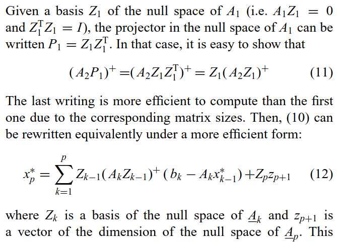